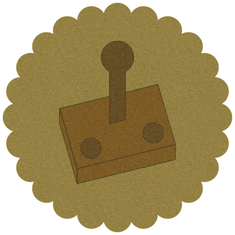

planetary defense - the future of tower defense
Steuerrung

Bewegung - linke Maustaste gedrückt halten
Zoomen - Mausrad drehen
MG-Turm bauen - 1
Laserturm bauen - 2
Blitzturm bauen - 3
Raketenturm bauen - 4
Kraftwerk bauen - 5
Bauen abbrechen - Escape
Auswahl aufheben - Escape
Pause - Escape
Zoomen - Mausrad drehen
MG-Turm bauen - 1
Laserturm bauen - 2
Blitzturm bauen - 3
Raketenturm bauen - 4
Kraftwerk bauen - 5
Bauen abbrechen - Escape
Auswahl aufheben - Escape
Pause - Escape